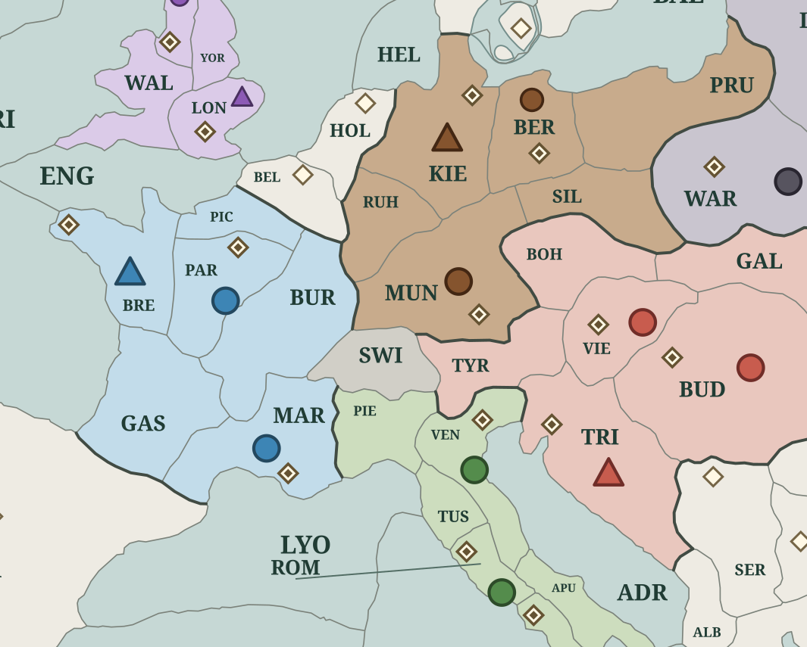
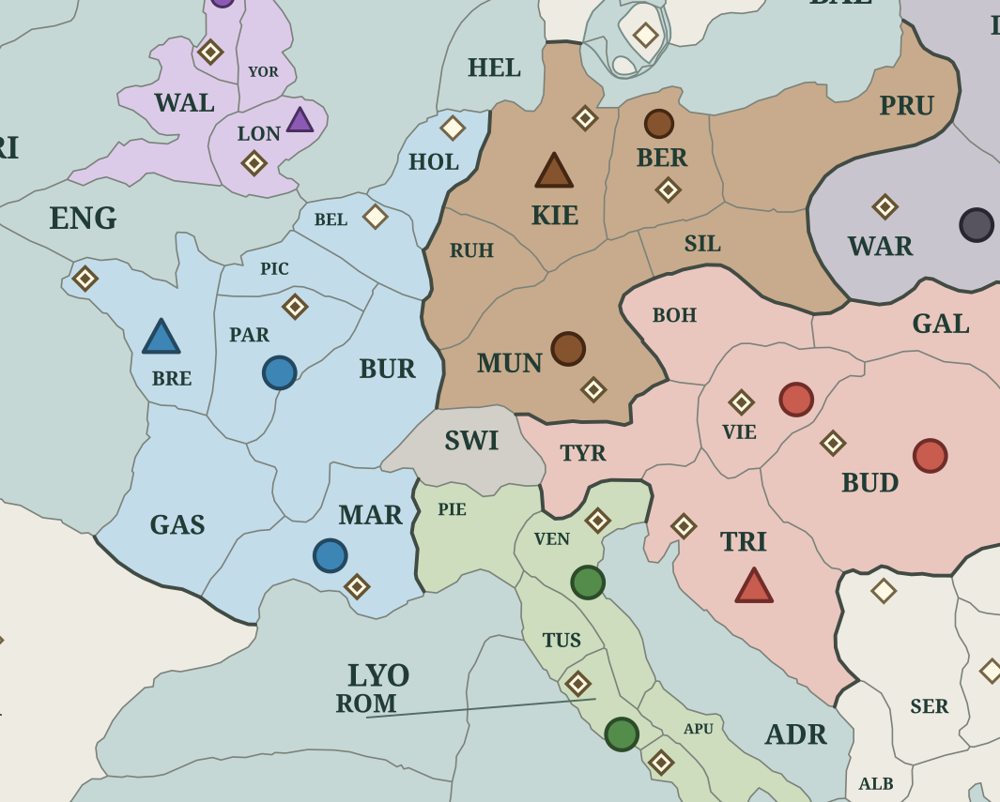

<!doctype html><title>Smooth land frontiers</title><style>body{margin:0;background:#f7f4e9;font:18px Georgia;color:#203c34}main{max-width:1400px;margin:auto}section{display:grid;grid-template-columns:1fr 1fr;gap:20px}img{width:100%;height:auto}h1,p{margin:20px}@media(max-width:650px){section{grid-template-columns:1fr}}</style><main><h1>Smooth vector land frontiers</h1><p>Starting control → Winter: France owns Belgium and Holland</p><section></section></main>